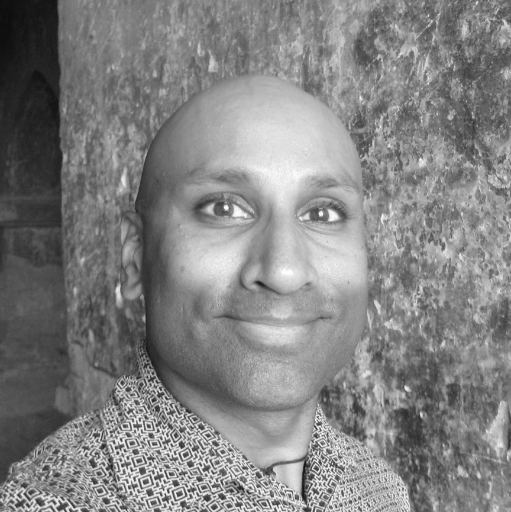

Sharad Sreenivasan
Education
Columbia University in the City of New York
Master of Science, Social Work (1999)
University of Cincinnati
Bachelor of Arts, Economics (1990)
Proyecto Linguistico Francisco Marroquin, Antigua, Guatemala
Spanish Immersion Program - Three Months (1998)
Cambridge English, UK
CELTA, Certificate in Teaching English to Speakers of Other Languages (2015)
Citizen’s Committee for Children of New York
Community Leadership Course (2004)
CUNY Hunter College
SIFI- Seminar in (Social Work) Field Instruction (2005)
Free Code Camp
Certificate in Responsive Web Design - 300 hours (2019)